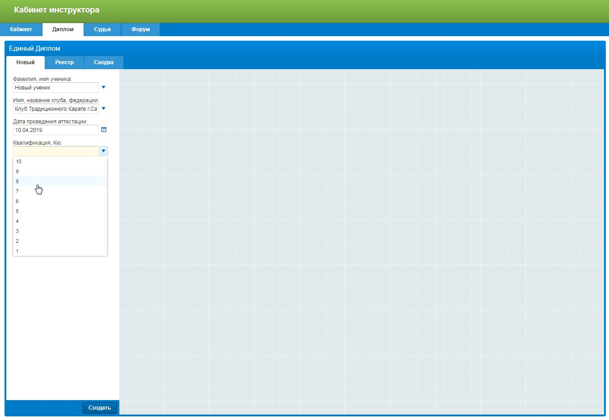
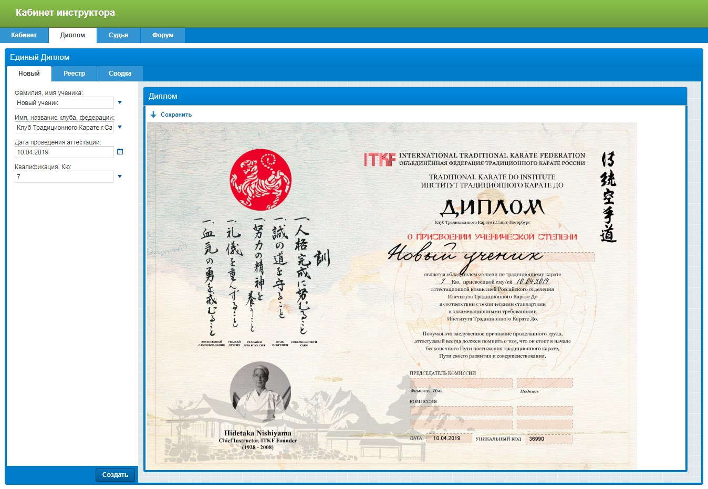
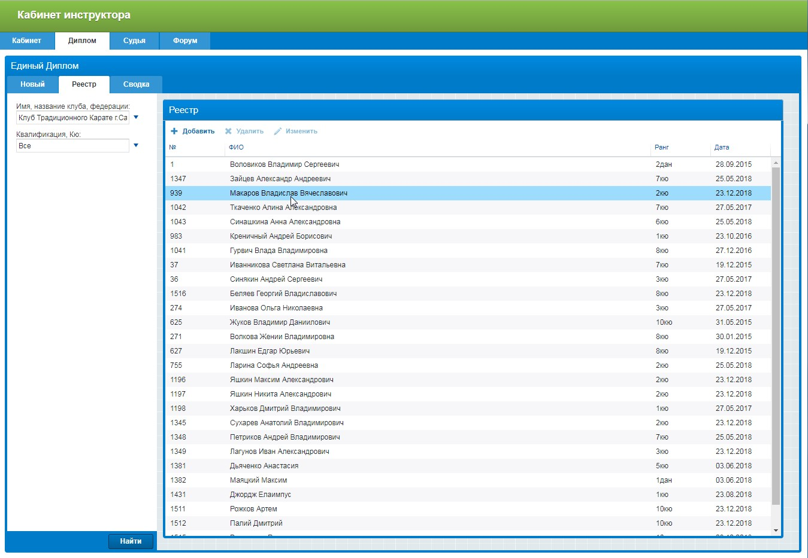
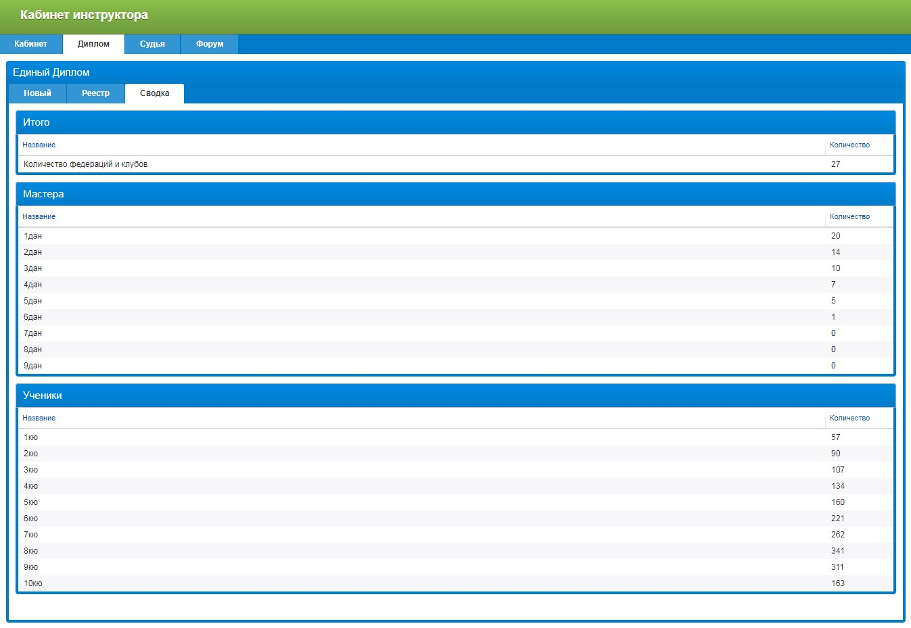
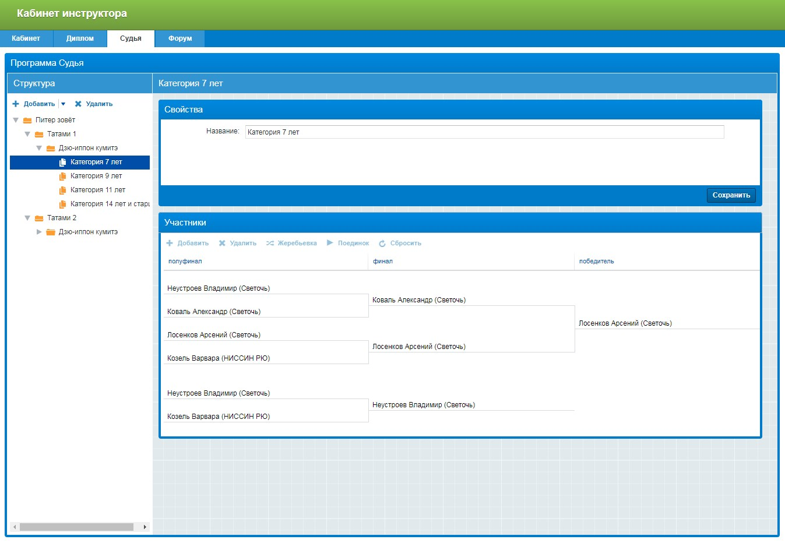
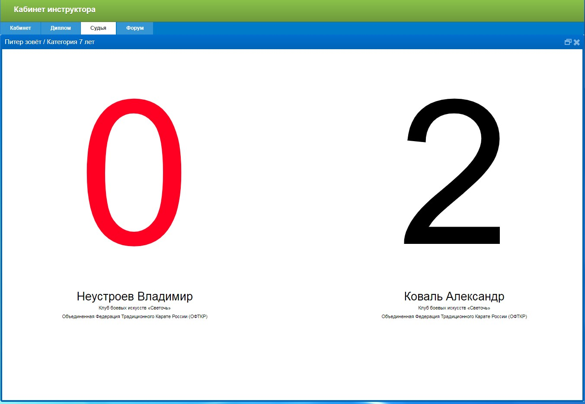
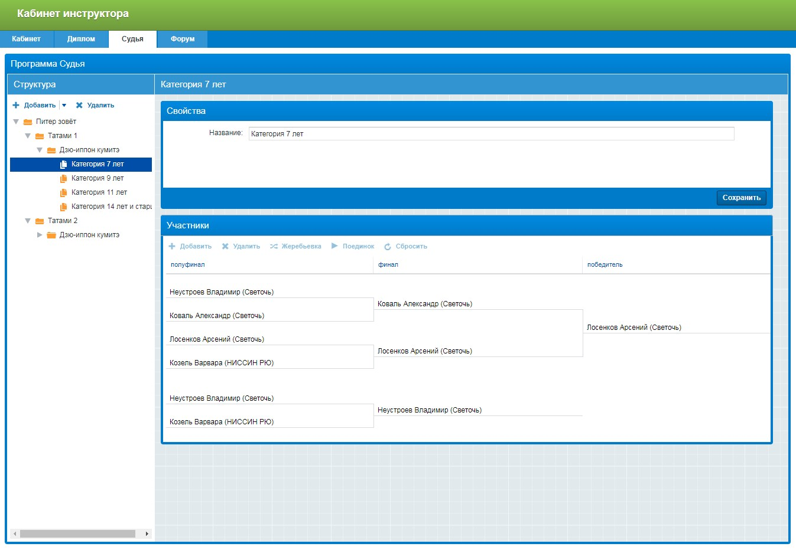
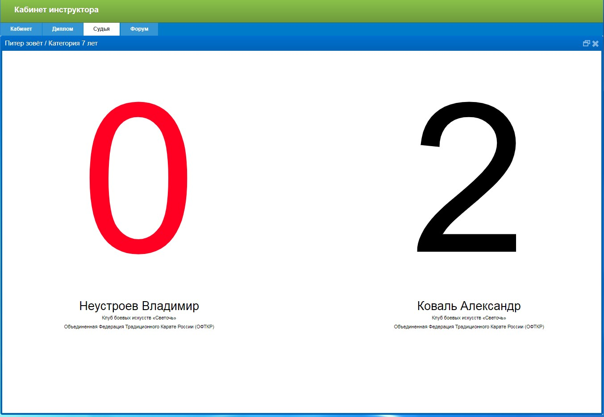

Презентация работы на соискание мастерской степени 3 Дан.
Воловиков Владимир Сергеевич. Россия. Санкт-Петербург
Вступление
Данная презентация служит дополнительным материалам на соискание мастерской степени 3 Дан. В ней, в хронологическом порядке, автор рассказывает о проведенных им мероприятиях, целью которых всегда была популяризация Традиционного Карате
{{year.title}}
Кабинет инструктора
Идея создания специальной программы для организации соревнований была впервые озвучена сенсеем Гонца А.Б. в 2013 году летом в Додзё Стара Вещь в Польше. В течении года были созданы первые наброски программы. Менялся ее внешний вид. Добавлялись составные части, модули, исправлялись ошибки. На текущий момент программа состоит из нескольких больших частей в которых, организация соревнований, большая, но не единственная часть.
Кабинет
Первый раздел программы называется Кабинет. Здесь инструктор может загрузить свою фотографию, а также, указать город в котором он ведет тренировки. Система автоматически покажет это место на карте. Тут также можно задать название своего клуба и указать контактные данные. Все эти данные нужны системе для формирование единой карты присутствия членов федерации. Такую карту можно разместить на официальном сайте организации.

Диплом
Изначально это была маленькая программа которая по введенным в форму данных автоматически рисовала диплом единого образца. А сейчас это часть Кабинета инструктора. Используя этот сервис все дипломы, всех клубов федерации будут иметь один общий вид. Более того, каждый диплом уникален. Он имеет уникальный номер. Если расположить форму вводу этого номера на официальный сайт федерации, то любой пользователь всегда может получить исчерпывающую информацию о том, кто выдал диплом, какой клуб, какой тренер и когда. Это прекрасная система контроля качества образования
   Судья
Вот эта вкладка открывает программу Судья, программу для организации соревнований. Очень важно понимать что это часть программы. Она доступна всем тренерам федерации. Это не отдельный продукт, а часть общей системы. Создавая очередные соревнования тренеру достаточно просто указать какие клубы будут участвовать в соревнованиях. Далее, программа, автоматически получит реестр учеников данного клуба из Единого Диплома, их возраст и квалификацию
 



Форум
Любая организация нуждается в системах передачи и хранения информации. В самом простом случае такой системой является обычная электронная почта. Но электронные адреса меняются. Количество писем становится большим. Сложно искать информацию. Форум - это часть Кабинета инструктора. Можно вести переписку. Можно хранить информацию, например аттестационную программу или какие то общие рекламные материалы. А еще, Форум, автоматически разошлет все тренерам федерации информацию. Ведь все электронные адреса ему известны